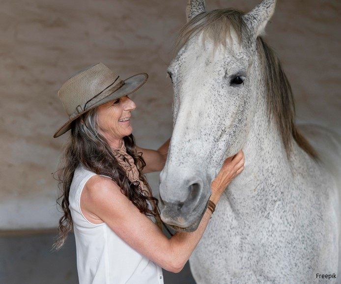
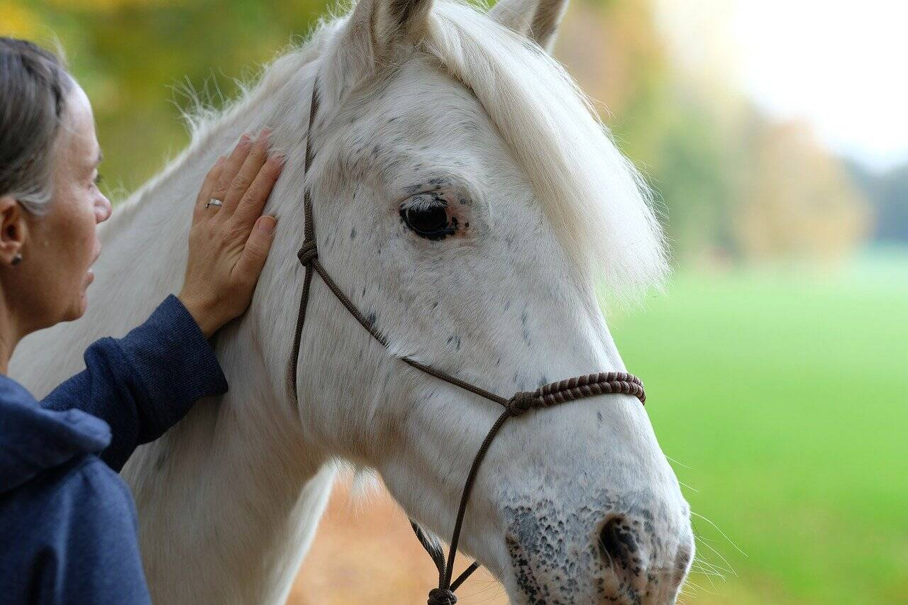

Finding an Equine Therapist



Ready to get started? If you or someone you know would like to participate in Equine Therapy, there are a number of ways to explore options near you. Here are a few suggestions to get you started:
- Performing a search on PsychologyToday.com for an "Equine Therapist"
- Performing a search on Google or other search engine for an "Equine Therapist near [preferred location]"
- Searching on EAGALA's website (Equine-Assisted Growth and Learning)